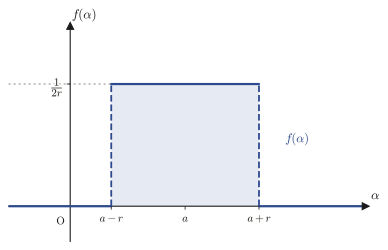
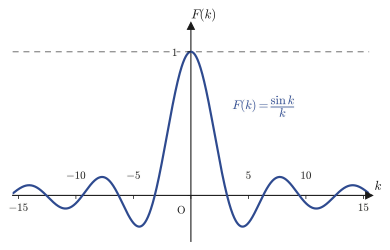
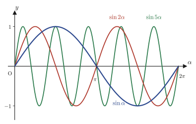
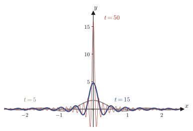
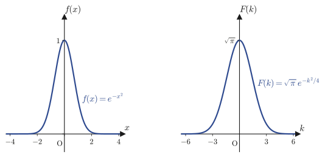
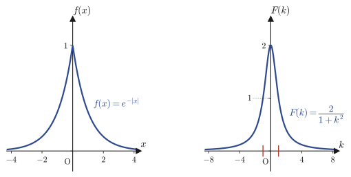
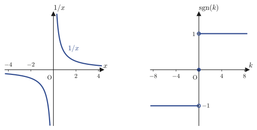

Chapter 30The Fourier Transform
In Chapters 27 and 28 we learned how to express a periodic function with period $2L$, $f(x+2L)=f(x)$, as an infinite series of trigonometric functions (or of complex exponential functions, which are their complex-number version)—the Fourier series. In Chapter 29 we confirmed a convergence theorem (Fourier's theorem) that guarantees when, and in what sense, that series converges to $f(x)$. However, the “waves” and “signals” of the real world are not necessarily periodic. A pulse that sounds just once, a force that acts only at the instant of a collision, a single light pulse flying into a detector—each of these is, so to speak, a “function with period $2L=\infty$.” In this chapter, by taking the limit in which the period is sent to infinity, we extend the Fourier series, a tool for periodic functions, to a tool that can be used for nonperiodic functions as well—the Fourier transform.
We aim to reach the following four goals. (1) Derive for yourself the Fourier transform $\Four[f(x)](k)=\displaystyle\int_{-\infty}^{\infty}f(x)e^{-ikx}\dd x$ and its inverse transform, as a limit of the complex Fourier series. (2) Compute the Fourier transforms of a rectangular pulse and of a complex exponential function, and meet a new tool, the delta function (Dirac delta) $\delta(x)$, which appears as “the limit in which the width is brought to zero.” (3) Find the Fourier transforms of two functions that appear frequently in physics as well—the Gaussian function and the two-sided exponential function—by integral computations that pass through the complex numbers. (4) Touch on the problem of the Fourier transform of $1/x$, which requires knowledge of complex analysis, and thereby connect to the courses that lie beyond.
- Derivation of the Fourier transform $\Four[f(x)](k)=\int_{-\infty}^{\infty}f(x)e^{-ikx}\dd x$ and the inverse transform $f(x)=\dfrac{1}{2\pi}\int_{-\infty}^{\infty}\Four[f](k)e^{ikx}\dd k$ as the limit obtained by sending the period $2L$ of the complex Fourier series (Chapter 28) to infinity
- The meaning of an improper integral (an integral whose interval of integration is infinite) and the idea of its convergence
- The Fourier transform $e^{-ika}\dfrac{\sin kr}{kr}$ of a rectangular pulse, and an intuition for the delta function that appears in the limit $r\to0$
- The properties that the delta function $\delta(x-a)$ must satisfy, and its representation by the sine kernel (also called the sinc kernel) $\displaystyle\lim_{t\to\infty}\frac{\sin t(x-a)}{\pi(x-a)}$
- The fact that the Fourier transform of the complex exponential function $e^{iKx}$ is $2\pi\delta(k-K)$ (the origin of the coefficient $2\pi$)
- The Fourier transforms of $\cos Kx,\ \sin Kx$ expressed with the delta function
- Derivation of the two-dimensional Gaussian integral by a change to polar coordinates, and the Fourier transform $\sqrt{\pi/\alpha}\,e^{-k^2/4\alpha}$ of the Gaussian function $e^{-\alpha x^2}$
- The Fourier transform $\dfrac{2\alpha}{\alpha^2+k^2}$ of the two-sided exponential function $e^{-\alpha|x|}$ (a Lorentzian) and its physical meaning
- The Fourier transform $-i\pi\sgn(k)$ of $1/x$ and the bridge to complex analysis; the parity (evenness and oddness) of Fourier transforms
Source notes: Yasuhide Mochizuki, Mathematics Notes: Fourier Series and Transforms, pp. 21–26.
30.1 Definition of the Fourier Transform — From Fourier Series to Integrals
Recall the complex Fourier series that we learned in Chapter 28. A piecewise smooth periodic function $g(x)$ of period $2L$ ($g(x+2L)=g(x)$) can, at points of continuity, be expanded as follows.
(In Chapter 28 this index was written as $k$, giving $C_k$ and $C_{-k}$; but in this chapter we will use the letter $k$ for the angular frequency, which varies continuously, so we rewrite the discrete index as $n$. The $C_n$ and $k_n$ below correspond to $C_k$ and $\frac{k\pi}{L}$ in Chapter 28.)
\begin{align} g(x)=\sum_{n=-\infty}^{\infty}C_n\,e^{ik_nx},\qquad k_n:=\frac{n\pi}{L},\qquad C_n=\frac{1}{2L}\int_{-L}^{L}g(y)\,e^{-ik_ny}\,\dd y \label{eq:30-complex-fs} \end{align}(Fourier's theorem in Chapter 29 guarantees this equality.) Here the values $k_n=n\pi/L$ ($n=0,\pm1,\pm2,\ldots$) are the “discrete angular frequencies (the quantity corresponding to the angle of rotation per second)” contained in a wave of period $2L$, and the spacing between adjacent $k_n$ is
$$ \Delta k:=k_{n+1}-k_n=\frac{\pi}{L} $$which is constant. The larger the period $2L$, the narrower the spacing $\Delta k=\pi/L$ between the frequencies used—for example, $\Delta k=\pi\approx3.14$ for $L=1$, $\Delta k\approx0.314$ for $L=10$, and $\Delta k\approx0.00314$ for $L=1000$—so that $\Delta k\to0$ as $L\to\infty$.
Intuition: A discrete musical scale becomes a continuous band of tones
The Fourier series of a periodic function is like building the original wave by superposing only the tones of a fixed musical scale (the discrete frequencies $k_n=n\pi/L$). As we make the period $2L$ larger and larger, the spacing $\Delta k=\pi/L$ between the available notes becomes narrower and narrower, and in the end the scale turns into a continuous band of frequencies with no gaps. A nonperiodic function, such as a “one-time pulse,” is intuitively a “periodic function with infinite period,” and so its components should be expressed not as a sum (series) over a discrete scale but as an integral over continuous frequencies—this is the idea from which this chapter starts.
Let us follow this intuition in formulas. Consider a nonperiodic function $f(x)$ (defined for $-\infty \lt x \lt \infty$, and such that $\displaystyle\int_{-\infty}^{\infty}\abs{f(x)}\dd x$ has a finite value). Take $L$ sufficiently large, regard $f(x)$ as a periodic function of period $2L$, and apply the complex Fourier series in Eq. \eqref{eq:30-complex-fs} (the larger $L$ is, the better this approximation becomes, under the assumption that $f$ is negligibly small outside the interval $(-L,L)$).
Derivation: The limit in which the Fourier series sum becomes the Fourier transform integral
Step 1: Rewrite the coefficient $C_n$ using the integral extended over the whole line. When $L$ is sufficiently large, $f$ can be regarded as almost $0$ outside the interval $(-L,L)$, so replacing the interval of integration in the defining formula of the coefficient by $(-\infty,\infty)$ is a good approximation. So we define
$$ G(k):=\int_{-\infty}^{\infty}f(y)\,e^{-iky}\,\dd y $$as a new continuous function of the angular frequency $k$. Then we can write $C_n\fallingdotseq\dfrac{1}{2L}G(k_n)$ (the symbol $\fallingdotseq$ means “approximately equal”). (The value of $G$ at $k=k_n=n\pi/L$ divided by $2L$ is approximately equal to the original coefficient $C_n$.)
Step 2: Rewrite the series as a sum with spacing $\Delta k$. Since $\Delta k=\pi/L$, we have $\dfrac{1}{2L}=\dfrac{\Delta k}{2\pi}$ (we used $2L=2\pi/\Delta k$). Substituting this into Eq. \eqref{eq:30-complex-fs}, the following expression
$$ f(x)\fallingdotseq\sum_{n=-\infty}^{\infty}\frac{G(k_n)}{2L}\,e^{ik_nx}=\frac{1}{2\pi}\sum_{n=-\infty}^{\infty}G(k_n)\,e^{ik_nx}\,\Delta k $$is obtained.
Step 3: Regard the sum as an integral. The sum $\displaystyle\sum_{n=-\infty}^{\infty}G(k_n)e^{ik_nx}\,\Delta k$ on the right-hand side is obtained by cutting the function $k\mapsto G(k)e^{ikx}$ into pieces of width $\Delta k$, multiplying the values by the width, and adding them up; it has precisely the form of a Riemann sum (the sum of the areas of thin strips that appeared in the definition of the definite integral you learned in high school and in Chapter 5). As $L\to\infty$ we have $\Delta k=\pi/L\to0$, so in the limit where the width goes to $0$ this sum converges to an integral:
$$ \lim_{L\to\infty}\frac{1}{2\pi}\sum_{n=-\infty}^{\infty}G(k_n)\,e^{ik_nx}\,\Delta k=\frac{1}{2\pi}\int_{-\infty}^{\infty}G(k)\,e^{ikx}\,\dd k $$(To justify this limiting procedure—the interchange of an infinite series and an infinite integral—with complete rigor requires arguments such as uniform convergence and the dominated convergence theorem from functional analysis, but in this book we adopt the natural picture that “the Riemann sum converges to the integral” and go no further.) Hence the following expression
\begin{align} f(x)=\frac{1}{2\pi}\int_{-\infty}^{\infty}G(k)\,e^{ikx}\,\dd k \label{eq:30-inverse-derive} \end{align}is obtained. The left-hand side is the original function $f(x)$ itself, and the right-hand side is an integral that can be computed as soon as $G(k)$ is known. In other words, $G(k)$ can be regarded as the continuous version of the Fourier coefficients, expressing the “strength of the component of frequency $k$” of $f(x)$.
Caution: What is an improper integral?
The argument above repeatedly involves integrals such as $\displaystyle\int_{-\infty}^{\infty}(\cdots)\dd x$, in which the interval of integration extends to infinity. Such an integral is called an improper integral and is defined as the following limit:
$$ \int_{-\infty}^{\infty}h(x)\,\dd x:=\lim_{A\to\infty}\int_{-A}^{A}h(x)\,\dd x $$(The interval of integration is extended symmetrically from $-A$ to $A$, and then we let $A\to\infty$.) When this limit converges to a finite value, we say that the improper integral converges. For example, for $h(x)=1/(1+x^2)$ we have $\displaystyle\int_{-A}^{A}\frac{\dd x}{1+x^2}=\tan^{-1}A-\tan^{-1}(-A)=2\tan^{-1}A$, and since $\tan^{-1}A\to\pi/2$ as $A\to\infty$, the improper integral converges to $\pi$ (we check this in detail in Example 30.1). Most of the improper integrals in this chapter converge without any difficulty like this, but subtle examples also appear in which the value is determined only by the symmetric way of extending the interval (from $-A$ to $A$), such as $1/x$, which we treat in Section 30.6. In such cases we use the term Cauchy principal value to make explicit that the limit is this symmetric one.
Definition 30.1: Fourier transform and inverse Fourier transform
For a function $f(x)$ ($-\infty \lt x \lt \infty$), if the improper integral
\begin{align} \Four[f(x)](k):=\int_{-\infty}^{\infty}f(x)\,e^{-ikx}\,\dd x \label{eq:30-def-ft} \end{align}converges (for each $k$), it is called the Fourier transform of $f(x)$. Conversely, the formula that recovers $f(x)$ from $F(k)=\Four[f(x)](k)$,
\begin{align} f(x)=\frac{1}{2\pi}\int_{-\infty}^{\infty}F(k)\,e^{ikx}\,\dd k \label{eq:30-def-ift} \end{align}is called the inverse Fourier transform.
Math Note: The sign convention and its consistency with the complex Fourier coefficients
Whether the kernel of the Fourier transform (the sign in the exponent of the exponential function inside the integral) is taken to be $e^{-ikx}$ or $e^{+ikx}$, and to which of the two formulas the factor $2\pi$ is attached, is a matter of convention, which differs from textbook to textbook. In this book, following the notation of the original notes, we adopt the convention that the kernel of the transform $\Four[\cdot]$ is $e^{-ikx}$, the kernel of the inverse transform is $e^{+ikx}$, and $2\pi$ is attached only to the inverse transform. This convention agrees exactly with the sign of the kernel ($e^{-ik_ny}$) in the definition of the complex Fourier coefficients in Chapter 28, $C_n=\dfrac{1}{2L}\displaystyle\int_{-L}^{L}f(y)e^{-ik_ny}\dd y$, and the derivation in this chapter is its natural extension.
Example 30.1: Convergence and value of the improper integral $\displaystyle\int_{-\infty}^{\infty}\frac{\dd x}{1+x^2}$
Verify, following the definition, that the improper integral $\displaystyle\int_{-\infty}^{\infty}\frac{\dd x}{1+x^2}$ converges, and find its value.
Solution. As in the definition, we integrate over the symmetric finite interval $[-A,A]$ and then let $A\to\infty$. Since $\dfrac{d}{dx}\tan^{-1}x=\dfrac{1}{1+x^2}$ (the derivative of the inverse tangent function, which you learned in high school), $\tan^{-1}x$ is an antiderivative, so
$$ \int_{-A}^{A}\frac{\dd x}{1+x^2}=\Bigl[\tan^{-1}x\Bigr]_{-A}^{A}=\tan^{-1}A-\tan^{-1}(-A)=2\tan^{-1}A $$(We used $\tan^{-1}(-A)=-\tan^{-1}A$, since $\tan^{-1}$ is an odd function.) As $A\to\infty$, $\tan^{-1}A$ increases monotonically and approaches $\pi/2$ (because $\tan(\pi/2-0)=+\infty$). Therefore,
$$ \int_{-\infty}^{\infty}\frac{\dd x}{1+x^2}=\lim_{A\to\infty}2\tan^{-1}A=2\times\frac{\pi}{2}=\pi $$Thus the integral converges, and its value is $\pi$. (This improper integral actually has essentially the same form as the integral of $2\alpha/(\alpha^2+k^2)$, the Fourier transform of the two-sided exponential function that we study in Section 30.5 of this chapter, with $\alpha=1,k=x$ substituted, and we can confirm this result again later from another angle.)
30.2 The Fourier Transform of a Rectangular Pulse and the Gateway to the Delta Function
Let us put Definition 30.1 to actual use. As our first example, take the “rectangular pulse” of height $\dfrac{1}{2r}$ and width $2r$, defined by
$$ f(\alpha)=\begin{cases}\dfrac{1}{2r} & (a-r \lt \alpha \lt a+r)\\[4pt] 0 & (\alpha \lt a-r,\ \ a+r \lt \alpha)\end{cases} $$Here $r\gt0$ is half the width and $a$ is a constant giving the position of the center. This function is constructed so that the product of the height and the width is always
$$ (\text{height})\times(\text{width})=\frac{1}{2r}\times2r=1 $$—in other words, the area under the pulse (the area between it and the $\alpha$-axis) is always $1$, whatever value we take for $r$. The graph is shown in Figure 30.1.

Illustration 30.1: The Fourier transform of a rectangular pulse and its convergence to the delta function
Find the Fourier transform $\Four[f(\alpha)](k)$ of the rectangular pulse $f(\alpha)$ above, and examine its behavior as $r\to0$.
Solution. We substitute into Definition 30.1. Since $f(\alpha)$ is $0$ outside the interval $(a-r,a+r)$, the interval of integration need only be that interval.
$$ \Four[f(\alpha)](k)=\int_{a-r}^{a+r}\frac{1}{2r}\,e^{-ik\alpha}\,\dd\alpha $$An antiderivative of $e^{-ik\alpha}$ is $\dfrac{1}{-ik}e^{-ik\alpha}$ (this can be checked by $\dfrac{d}{d\alpha}\left[\dfrac{1}{-ik}e^{-ik\alpha}\right]=\dfrac{-ik}{-ik}e^{-ik\alpha}=e^{-ik\alpha}$), so
$$ \Four[f(\alpha)](k)=\left[\frac{1}{2r}\cdot\frac{1}{-ik}e^{-ik\alpha}\right]_{a-r}^{a+r}=\frac{1}{-i2rk}\Bigl(e^{-ik(a+r)}-e^{-ik(a-r)}\Bigr) $$Here we split the exponents into a form from which the common factor $e^{-ika}$ can be factored out: $e^{-ik(a+r)}=e^{-ika}e^{-ikr}$ and $e^{-ik(a-r)}=e^{-ika}e^{ikr}$ (in both cases we have used only the exponent law $e^{X+Y}=e^Xe^Y$). Therefore,
$$ \Four[f(\alpha)](k)=\frac{e^{-ika}}{-i2rk}\Bigl(e^{-ikr}-e^{ikr}\Bigr) $$For the expression in parentheses, the Euler representation of the sine function, $\sin\theta=\dfrac{e^{i\theta}-e^{-i\theta}}{2i}$, gives $e^{-ikr}-e^{ikr}=-\bigl(e^{ikr}-e^{-ikr}\bigr)=-2i\sin(kr)$, and hence we obtain
\begin{align} \Four[f(\alpha)](k)=\frac{e^{-ika}}{-i2rk}\times\bigl(-2i\sin(kr)\bigr)=e^{-ika}\,\frac{\sin(kr)}{kr} \label{eq:30-box-ft} \end{align}(Note that the $i$ cancels between $-i2rk$ and $-2i$, and the two minus signs also cancel each other, so that in the end the positive $\sin(kr)/(kr)$ remains.)
Next we consider the limit $r\to0$. If we put $u=kr$, then $\dfrac{\sin(kr)}{kr}$ takes the form $\dfrac{\sin u}{u}$, and it is well known that $\dfrac{\sin u}{u}\to1$ as $u\to0$ (this limit follows from the first-order (linear) approximation $\sin u\fallingdotseq u$, and it can also be confirmed by l'Hôpital's rule or by the squeeze theorem). Since $u=kr\to0$ as $r\to0$, we have
$$ \lim_{r\to0}\Four[f(\alpha)](k)=\lim_{r\to0}e^{-ika}\frac{\sin(kr)}{kr}=e^{-ika} $$That is, as the width of the pulse approaches $0$, the Fourier transform converges to the simple phase factor $e^{-ika}$, which does not depend on $k$.
Caution: It is easy to get the sign of the phase factor wrong
In the middle of the derivation of Eq. \eqref{eq:30-box-ft}, the step of factoring the common factor out of $e^{-ik(a+r)}-e^{-ik(a-r)}$ is a tricky spot where the signs are easy to get wrong. We have $e^{-ik(a-r)}=e^{-ika+ikr}=e^{-ika}e^{+ikr}$, not $e^{-ika}e^{-ikr}$—that is, when the common factor is taken out of the $a-r$ term, the sign of the exponent is reversed and it becomes $e^{+ikr}$. If this is done the other way around, the phase of the final result comes out as $e^{+ika}$, an expression with the wrong sign. Overlooking signs ($\pm$) in this way is one of the mistakes most likely to occur in Fourier transform computations, so it is a good habit to write out the exponents one by one and check them.
What happens to the rectangular pulse $f(\alpha)$ itself in the limit $r\to0$? The height $1/(2r)$ diverges to $+\infty$ as $r\to0$, and the width $2r$ shrinks to $0$. But the area (height × width) stays equal to $1$ throughout. This peculiar limit—“the width is $0$, yet the area is $1$”—which cannot be realized by the graph of an ordinary function, is the intuitive picture of the delta function (Dirac delta) $\delta(\alpha-a)$, which is driven like a spike of infinite height into the single point $\alpha=a$. Just what properties the delta function is supposed to satisfy will be defined precisely in the next section, Section 30.3, after we study the Fourier transform of a complex exponential function.
If we plot the Fourier transform of the rectangular pulse, $F(k)=e^{-ika}\sin(kr)/(kr)$, as a function of $k$, we obtain a shape that has a large peak near the origin and, away from it, oscillates while decaying (the shape called the sinc function). In the next example, we confirm this shape for concrete numerical values.
Example 30.2: The rectangular pulse with $a=0,\ r=1$, and the fact that its area is $1$ regardless of $r$
(a) For the case $a=0,\ r=1$, find the Fourier transform of the rectangular pulse $f(\alpha)$ by substituting into Eq. \eqref{eq:30-box-ft}, the general formula. (b) Show that the area under the rectangular pulse $f(\alpha)$, $\displaystyle\int_{a-r}^{a+r}f(\alpha)\,\dd\alpha$, equals $1$ regardless of the value of $r$.
Solution. (a) Substituting $a=0,r=1$ into Eq. \eqref{eq:30-box-ft} and using $e^{-ik\cdot0}=1$, we have
$$ \Four[f(\alpha)](k)=1\times\frac{\sin(k\cdot1)}{k\cdot1}=\frac{\sin k}{k} $$This is exactly the sinc function shown in Figure 30.2.
(b) The area can be found by integrating directly from the definition of the pulse. Since $f(\alpha)=1/(2r)$ is constant on the interval $(a-r,a+r)$ (of width $2r$),
$$ \int_{a-r}^{a+r}f(\alpha)\,\dd\alpha=\int_{a-r}^{a+r}\frac{1}{2r}\,\dd\alpha=\frac{1}{2r}\times\bigl[(a+r)-(a-r)\bigr]=\frac{1}{2r}\times2r=1 $$and so the area is always $1$, regardless of the value of $r$. (This is also consistent with the limit $\displaystyle\lim_{k\to0}\Four[f(\alpha)](k)=\lim_{k\to0}\frac{\sin k}{k}=1$ obtained by letting $k\to0$ in the result of (a)—for if we substitute $k=0$ into the definition of the Fourier transform, $\Four[f](0)=\int f(\alpha)\dd\alpha$, we see that the value of the transform at $k=0$ is exactly equal to the area.) Both computations confirm the result expected from the design of “a pulse whose height is adjusted so that its area is preserved when the width is changed.”

30.3 The Fourier Transform of a Complex Exponential and the Definition of the Delta Function
The rectangular pulse of the previous section was a “localized” function that becomes $0$ as $\alpha\to\pm\infty$. This time, by contrast, let us examine the Fourier transform of the function $f(\alpha)=e^{iK\alpha}$ ($K$ is a real constant), which keeps oscillating forever without decaying.
Illustration 30.2: The Fourier transform of the complex exponential $e^{iK\alpha}$
Examine the Fourier transform $\Four[f(\alpha)](k)$ of $f(\alpha)=e^{iK\alpha}$.
Solution. Substituting into Definition 30.1, we obtain
$$ \Four[f(\alpha)](k)=\int_{-\infty}^{\infty}e^{iK\alpha}\,e^{-ik\alpha}\,\dd\alpha=\int_{-\infty}^{\infty}e^{i(K-k)\alpha}\,\dd\alpha $$The absolute value of this integrand is always $1$ ($\abs{e^{i(K-k)\alpha}}=1$), and it does not become small as $\alpha\to\pm\infty$, so, unlike the integrals in the preceding sections, this integral does not converge in the ordinary sense. We therefore consider the quantity obtained by truncating the interval of integration to $(-t,t)$,
$$ g(k):=\int_{-t}^{t}e^{i(K-k)\alpha}\,\dd\alpha $$and examine what happens in the limit $t\to\infty$.
[1] The case $K=k$. The integrand becomes $e^{i\cdot0\cdot\alpha}=1$, so we have
$$ g(k)=\int_{-t}^{t}1\,\dd\alpha=2t\ \xrightarrow[\ t\to\infty\ ]{}\ +\infty $$In other words, exactly at the point $k=K$, $g(k)$ grows without bound.
[2] The case $K\neq k$. An antiderivative of $e^{i(K-k)\alpha}$ is $\dfrac{1}{i(K-k)}e^{i(K-k)\alpha}$, so
$$ g(k)=\left[\frac{1}{i(K-k)}e^{i(K-k)\alpha}\right]_{-t}^{t}=\frac{e^{i(K-k)t}-e^{-i(K-k)t}}{i(K-k)} $$Using the Euler representation $\sin\theta=\dfrac{e^{i\theta}-e^{-i\theta}}{2i}$ (with $\theta=(K-k)t$), the numerator on the right-hand side can be written as $e^{i(K-k)t}-e^{-i(K-k)t}=2i\sin\bigl((K-k)t\bigr)$, so
$$ g(k)=\frac{2i\sin\bigl((K-k)t\bigr)}{i(K-k)}=\frac{2\sin\bigl((K-k)t\bigr)}{K-k} $$As $t\to\infty$, $\sin\bigl((K-k)t\bigr)$ merely keeps oscillating between $-1$ and $1$ and does not approach any value. However, if we fix $K\neq k$, $g(k)$ stays confined to the finite range given by $\dfrac{2}{\abs{K-k}}$, and, in contrast to the divergence $g(K)=2t\to\infty$ at $k=K$, it becomes relatively smaller and smaller. In the words of the original notes, this is expressed by saying that “$g(k)$ becomes effectively $0$ as $t\to\infty$.”
Intuition: What does “effectively 0” mean?
Figure 30.3 shows the graphs of $\sin\alpha$, $\sin2\alpha$, and $\sin5\alpha$ superimposed. We see that the larger the frequency (the coefficient of $\alpha$), the finer the peaks and troughs become, and the number of points where $y=0$ (the zeros) increases without limit. As we make $k$ in $\sin(k\alpha)$ larger and larger, any interval, however small, comes to contain almost equal amounts of positive and negative parts. Therefore, if we multiply this function by some ordinary (smooth) function $\varphi(\alpha)$ and integrate, the positive and negative contributions cancel finely against each other and the integral as a whole approaches $0$—this is the meaning of “effectively 0.” The Riemann–Lebesgue lemma that we learned in Chapter 29 is a completely precise statement of this fact: it asserts that, for a piecewise continuous function $\varphi(\alpha)$, $\displaystyle\lim_{\omega\to\infty}\int_a^b\varphi(\alpha)\sin(\omega\alpha)\,\dd\alpha=0$ holds (in the notation of Chapter 29 the integration variable was written $x$ and the frequency $\alpha$, but here we read the integration variable as $\alpha$ and the frequency as $\omega$). The fact that $g(k)$ ($k\neq K$) in this section approaches “effectively 0” is, in the end, the same phenomenon as this lemma.

From the above, we see that $g(k)$ diverges to infinity at the single point $k=K$ only and is effectively $0$ everywhere else, a behavior very similar to that of the rectangular pulse in the limit $r\to0$ in the previous section. This strongly suggests that a delta-function-type object concentrated at $k=K$ is appearing. Let us therefore define the delta function precisely.
Definition 30.2: Delta function (distribution)
For a real number $a$, the delta function (also called the Dirac delta function) $\delta(x-a)$ is an (idealized) object satisfying the following properties:
$$ \delta(x-a)=\begin{cases}\infty & (x=a)\\0 & (x\neq a)\end{cases} \qquad\text{and}\qquad \int_{-\infty}^{\infty}\delta(x-a)\,\dd x=1 $$Note that $\delta(x-a)$ is not a “function” in the ordinary sense in which we have used the word so far. For an ordinary function, changing the value at a single point does not affect the value of the integral (because, relative to area, a single point has “zero width”). Yet $\delta(x-a)$ has a property that seems almost contradictory: although it is $0$ at almost every point, its integral is $1$. Objects of this kind belong to a class called distributions (generalized functions), which extends the notion of an ordinary function. This book does not enter into the theory of distributions; we treat them at the intuitive level of “where a pulse-like object ends up when its width is narrowed to the limit.”
Formula 30.1: Sine-kernel (sinc-kernel) representation of the delta function
\begin{align} \delta(x-a)=\lim_{t\to\infty}\frac{\sin t(x-a)}{\pi(x-a)} \label{eq:30-delta-rep} \end{align}Proof: Verifying that Formula 30.1 satisfies the properties of Definition 30.2
(i) It becomes infinite at $x=a$. Since the two limits $x\to a$ and $t\to\infty$ appear simultaneously, we first compute $x\to a$ (with $t$ held fixed). Setting $u=t(x-a)$, we have $u\to0$ as $x\to a$, and $\sin t(x-a)=\sin u$ and $\pi(x-a)=\pi u/t$, so
$$ \lim_{x\to a}\frac{\sin t(x-a)}{\pi(x-a)}=\lim_{u\to0}\frac{t}{\pi}\cdot\frac{\sin u}{u}=\frac{t}{\pi}\times1=\frac{t}{\pi} $$(we used $\lim_{u\to0}\sin u/u=1$, the same fact as in Illustration 30.1). If we now take $t\to\infty$ in this result, we get
$$ \lim_{t\to\infty}\frac{t}{\pi}=\infty $$so indeed it diverges to infinity at $x=a$.
(ii) It becomes $0$ for $x\neq a$. If we fix $x\neq a$, then $\pi(x-a)$ is a constant, not equal to $0$, that does not depend on $t$. The numerator $\sin t(x-a)$, on the other hand, becomes “effectively $0$” as $t\to\infty$, for exactly the same reason as in the case of $g(k)$ on the previous page (the phenomenon seen in Figure 30.3 that raising the frequency makes the oscillation finer). Therefore,
$$ x\neq a\ \text{implies}\qquad\lim_{t\to\infty}\frac{\sin t(x-a)}{\pi(x-a)}=0 $$may be regarded as holding.
(iii) The integral equals $1$. Substituting $u=t(x-a)$, we have $\dd x=\dd u/t$, and the interval of integration becomes $u:-\infty\to\infty$ when $x:-\infty\to\infty$ (the direction does not change because $t\gt0$), so
$$ \int_{-\infty}^{\infty}\frac{\sin t(x-a)}{\pi(x-a)}\,\dd x=\int_{-\infty}^{\infty}\frac{\sin u}{\pi u/t}\cdot\frac{\dd u}{t}=\int_{-\infty}^{\infty}\frac{1}{\pi}\frac{\sin u}{u}\,\dd u $$Remarkably, no $t$ remains at all on the right-hand side (the substitution has cleanly eliminated $t$). The value of the improper integral $\displaystyle\int_{-\infty}^{\infty}\frac{\sin u}{u}\,\dd u=\pi$ is a classical result that can be proved rigorously by using the residue theorem of complex analysis (an advanced tool beyond the scope of this book, whose name was only announced at the end of Chapter 26). Since this book treats only up to Chapter 26, we do not prove it here and use it as a known fact (numerically, $\displaystyle\int_{-4000}^{4000}\frac{\sin u}{u}\dd u\fallingdotseq3.14196\ldots$, which is indeed close to $\pi=3.14159\ldots$). Therefore,
$$ \int_{-\infty}^{\infty}\frac{\sin t(x-a)}{\pi(x-a)}\,\dd x=\frac{1}{\pi}\times\pi=1 $$holds always, regardless of the value of $t$. Since $t$ has disappeared, the value remains $1$ even when we let $t\to\infty$.
By (i), (ii), and (iii), the right-hand side of Formula 30.1 satisfies all the properties of Definition 30.2. ∎
Figure 30.4 shows superimposed graphs of $\sin t(x-a)/(\pi(x-a))$ ($a=0$) for $t=5,15,50$. As $t$ grows, the peak becomes narrower and taller and approaches ever closer to the intuitive picture of $\delta(x)$ (a spike of width 0, infinite height, and area 1). Also, as we saw in (iii), the area under this graph (including the oscillating tails) is always $1$ regardless of the value of $t$—as the peak becomes taller and narrower, the area contained in the oscillating tails is squeezed into an ever narrower range as $t$ increases.

Conclusion of Illustration 30.2 (continued). Now that Formula 30.1 is available, let us look back at $g(k)$ of Illustration 30.2. Let $u:=k-K$. Then $K-k=-u$, so $\sin\bigl((K-k)t\bigr)=\sin(-ut)=-\sin(ut)$, and
$$ g(k)=\frac{2\sin\bigl((K-k)t\bigr)}{K-k}=\frac{2\times\bigl(-\sin(ut)\bigr)}{-u}=\frac{2\sin(ut)}{u}=2\pi\times\frac{\sin(ut)}{\pi u}=2\pi\times\frac{\sin t(k-K)}{\pi(k-K)} $$can be rewritten in this way. The last fraction is exactly the right-hand side of Formula 30.1 (in the case $x=k,\ a=K$), so in the limit $t\to\infty$ we obtain
$$ \lim_{t\to\infty}g(k)=2\pi\,\delta(k-K) $$That is,
\begin{align} \Four\bigl[e^{iK\alpha}\bigr](k)=2\pi\,\delta(k-K) \label{eq:30-expdelta} \end{align}holds.
Caution: Do not overlook the factor $2\pi$
Eq. \eqref{eq:30-expdelta} has a factor $2\pi$ multiplying the delta-function representation of Formula 30.1. This factor arises when the $\pi$ in the denominator of Formula 30.1 is “embedded” into the whole expression $g(k)=\dfrac{2\sin\bigl((K-k)t\bigr)}{K-k}$; if one forgets to write the $2\pi$ in the rewriting $2\sin(ut)/u=2\pi\times\bigl[\sin(ut)/(\pi u)\bigr]$, it is easy to make the mistake of stating the conclusion simply as $\delta(k-K)$. In computations involving the delta function, constant factors like this are often overlooked, so let us make a habit of checking, one by one, which expression corresponds to which formula.
Example 30.3: The Fourier transforms of $\cos Kx,\ \sin Kx$
Using Eq. \eqref{eq:30-expdelta} and Euler's formula, express $\Four[\cos Kx](k)$ and $\Four[\sin Kx](k)$ in terms of the delta function.
Solution. From Euler's formula $e^{i\theta}=\cos\theta+i\sin\theta$ we have $\cos Kx=\dfrac{e^{iKx}+e^{-iKx}}{2}$ and $\sin Kx=\dfrac{e^{iKx}-e^{-iKx}}{2i}$ (these are obtained by adding and subtracting, side by side, the cases $\theta=Kx$ and $\theta=-Kx$; they are the complex version of the relations you also saw in high school). Since the Fourier transform is an integral, it has linearity ($\Four[c_1f+c_2g]=c_1\Four[f]+c_2\Four[g]$, where $c_1,c_2$ are constants). Using this together with Eq. \eqref{eq:30-expdelta} ($\Four[e^{iKx}](k)=2\pi\delta(k-K)$, and, replacing $K\to-K$, $\Four[e^{-iKx}](k)=2\pi\delta(k+K)$), we get
$$ \Four[\cos Kx](k)=\frac{1}{2}\Bigl(\Four[e^{iKx}](k)+\Four[e^{-iKx}](k)\Bigr)=\frac{1}{2}\Bigl(2\pi\delta(k-K)+2\pi\delta(k+K)\Bigr)=\pi\bigl(\delta(k-K)+\delta(k+K)\bigr) $$ $$ \Four[\sin Kx](k)=\frac{1}{2i}\Bigl(\Four[e^{iKx}](k)-\Four[e^{-iKx}](k)\Bigr)=\frac{1}{2i}\Bigl(2\pi\delta(k-K)-2\pi\delta(k+K)\Bigr)=-i\pi\bigl(\delta(k-K)-\delta(k+K)\bigr) $$(in the last step we used $1/i=-i$; this can be confirmed by $1/i=i/i^2=i/(-1)=-i$). In both cases the result is expressed by a pair of delta functions standing only at the two points $k=K$ and $k=-K$—this is the delta-function expression of the fact that a trigonometric function is a superposition of “two frequency components, one positive and one negative.” (SymPy check of the coefficients: $\frac12(1+1)=1\Rightarrow$ overall coefficient $\pi$, $\frac{1}{2i}(1-(-1))=\frac1i=-i\Rightarrow$ overall coefficient $-i\pi$, in agreement with the result in the text.)
30.4 The Fourier Transform of the Gaussian Function
The two examples so far (the rectangular pulse and the complex exponential function) were each either a “kinked” function or a function that “keeps oscillating.” Here, for a change of pace, let us take up the smooth, left–right symmetric “bell-shaped” function
$$ f(x)=e^{-\alpha x^2}\qquad(\alpha\gt0\ \text{is a positive constant that determines the width}) $$and examine it. This function is called the Gaussian function, and it is a special function that appears in all kinds of situations, such as the normal distribution in statistics, solutions of the heat equation, and wave functions in quantum mechanics. The larger $\alpha$ is, the narrower and taller the peak becomes, and the smaller $\alpha$ is, the more gently the peak spreads out (it takes its maximum value $1$ at $x=0$ and approaches $0$ rapidly as $x\to\pm\infty$).
Why is it difficult? An antiderivative that cannot be written with elementary functions
It is in fact known that an antiderivative (indefinite integral) of $e^{-\alpha x^2}$ cannot be expressed in terms of combinations of $\sin x,\ \cos x,\ e^x,\ \log x$ and so on (what are called elementary functions); the antiderivative itself exists, but it cannot be written without introducing a new special function that represents it—the error function $\operatorname{erf}(x)$. Therefore, the strategy of “finding an antiderivative and substituting,” as we did for the rectangular pulse and the complex exponential function, cannot be used here. Even finding the value of the improper integral $\displaystyle\int_{-\infty}^{\infty}e^{-\alpha x^2}\dd x$ itself requires some ingenuity, and finding the Fourier transform $\Four[e^{-\alpha x^2}](k)$ requires one more level of ingenuity.
So first, as preparation for computing the Fourier transform, let us find the value of the improper integral $\displaystyle\int_{-\infty}^{\infty}e^{-\alpha x^2}\dd x$ itself. This is a famous computation, and it uses a technique that seems at first glance to be a detour: “squaring the one-variable integral and turning it into a two-variable integral (double integral).”
Derivation: The Gaussian integral $\displaystyle\int_{-\infty}^{\infty}e^{-\alpha x^2}\dd x=\sqrt{\pi/\alpha}$ (lifting to two dimensions and the change to polar coordinates)
Let $\displaystyle I:=\int_{-\infty}^{\infty}e^{-\alpha x^2}\dd x$ ($I\gt0$, since the integrand is positive). Instead of finding $I$, we consider finding $I^2$. The value of an integral does not change no matter which letter we use for the integration variable, so if we rewrite the variable of the second integral as $y$, we have
$$ I^2=\left(\int_{-\infty}^{\infty}e^{-\alpha x^2}\dd x\right)\left(\int_{-\infty}^{\infty}e^{-\alpha y^2}\dd y\right) $$The right-hand side is the product of the integral with respect to $x$ and the integral with respect to $y$, and since $x,y$ are mutually unrelated variables, we may compute it all at once as a “double integral over the whole $xy$-plane”
$$ I^2=\iint_{\R^2}e^{-\alpha(x^2+y^2)}\,\dd x\,\dd y $$(intuitively, the double integral $\displaystyle\iint_D g(x,y)\dd x\dd y$ is the quantity that represents the “volume” of the part between the surface $z=g(x,y)$ and the plane region $D$, and it can be computed by integrating with respect to $x$ and then with respect to $y$—or in the reverse order. Here we turn this evaluation around: the product of the integrals in the separate variables $x,y$ has been “regrouped” into a single double integral).
The integrand $e^{-\alpha(x^2+y^2)}$ of this double integral depends only on the distance $r=\sqrt{x^2+y^2}$ from the origin (it is rotationally symmetric). So we change variables to polar coordinates $x=r\cos\theta,\ y=r\sin\theta$ ($r\ge0$ is the distance from the origin, and $\theta$ is the angle measured from the $x$-axis). It is known that the area element then changes to $\dd x\,\dd y=r\,\dd r\,\dd\theta$ (this follows from the approximation that, if we cut a thin ring of radius $r$ and thickness $\dd r$ into sectors of angle $\dd\theta$ each, every small piece can be regarded as nearly a rectangle with height $\dd r$ and width $r\,\dd\theta$, so its area is $r\,\dd r\times\dd\theta$). The whole $xy$-plane corresponds to $r:0\to\infty,\ \theta:0\to2\pi$, so
$$ I^2=\int_0^{2\pi}\int_0^{\infty}e^{-\alpha r^2}\,r\,\dd r\,\dd\theta=\left(\int_0^{2\pi}\dd\theta\right)\left(\int_0^{\infty}e^{-\alpha r^2}\,r\,\dd r\right)=2\pi\int_0^{\infty}e^{-\alpha r^2}\,r\,\dd r $$(the $\theta$ integral and the $r$ integral separate into independent factors because both the integrand and the range of integration can be decomposed into the form of a product in $r,\theta$). If we substitute $u=r^2$ ($\dd u=2r\,\dd r$, that is, $r\,\dd r=\dd u/2$) in the last $r$ integral, then $r:0\to\infty$ corresponds to $u:0\to\infty$, and we have
$$ \int_0^{\infty}e^{-\alpha r^2}\,r\,\dd r=\int_0^{\infty}e^{-\alpha u}\,\frac{\dd u}{2}=\frac12\left[-\frac{1}{\alpha}e^{-\alpha u}\right]_0^{\infty}=\frac12\left(0-\left(-\frac1\alpha\right)\right)=\frac{1}{2\alpha} $$The integral is thus reduced to an ordinary one-variable improper integral, which can be computed immediately. Therefore
$$ I^2=2\pi\times\frac{1}{2\alpha}=\frac{\pi}{\alpha} $$is obtained. Since $I\gt0$, taking the positive square root of both sides shows that
\begin{align} \int_{-\infty}^{\infty}e^{-\alpha x^2}\,\dd x=\sqrt{\frac{\pi}{\alpha}} \label{eq:30-gauss-integral} \end{align}holds. ∎
Now that the preparation is complete, let us compute the Fourier transform of the Gaussian function, $\Four[e^{-\alpha x^2}](k)=\displaystyle\int_{-\infty}^{\infty}e^{-\alpha x^2}e^{-ikx}\dd x$. We combine the exponents into one and carry out completing the square in $x$ (transforming a quadratic expression into the form $(x+\square)^2+\triangle$; this is the same technique that we used in high school mathematics to find the vertex of a quadratic function).
Illustration 30.3: The Fourier transform of the Gaussian function $e^{-\alpha x^2}$
Find the Fourier transform $\Four[e^{-\alpha x^2}](k)$ of the Gaussian function $f(x)=e^{-\alpha x^2}$ ($\alpha\gt0$).
Solution. We complete the square in the exponent. We have $-\alpha x^2-ikx=-\alpha\left(x^2+i\dfrac{k}{\alpha}x\right)$, and $x^2+i\dfrac{k}{\alpha}x=\left(x+i\dfrac{k}{2\alpha}\right)^2-\left(i\dfrac{k}{2\alpha}\right)^2=\left(x+i\dfrac{k}{2\alpha}\right)^2+\dfrac{k^2}{4\alpha^2}$ (note that $\left(i\frac{k}{2\alpha}\right)^2=-\frac{k^2}{4\alpha^2}$), so we get
$$ -\alpha x^2-ikx=-\alpha\left\{\left(x+i\frac{k}{2\alpha}\right)^2+\frac{k^2}{4\alpha^2}\right\}=-\alpha\left(x+i\frac{k}{2\alpha}\right)^2-\frac{k^2}{4\alpha} $$Hence we have
$$ \Four[e^{-\alpha x^2}](k)=\int_{-\infty}^{\infty}e^{-\alpha\left(x+i\frac{k}{2\alpha}\right)^2-\frac{k^2}{4\alpha}}\dd x=e^{-\frac{k^2}{4\alpha}}\int_{-\infty}^{\infty}e^{-\alpha\left(x+i\frac{k}{2\alpha}\right)^2}\dd x $$(the factor $e^{-k^2/4\alpha}$ that depends only on $k$ can be taken outside the $x$ integral). Now let $u:=x+i\dfrac{k}{2\alpha}$. Then $\dd u=\dd x$ (since $k/2\alpha$ is a constant shift that does not depend on $x$), and, formally,
$$ \int_{-\infty}^{\infty}e^{-\alpha\left(x+i\frac{k}{2\alpha}\right)^2}\dd x=\int_{-\infty}^{\infty}e^{-\alpha u^2}\dd u=\sqrt{\frac{\pi}{\alpha}} $$(the last equality is Eq. \eqref{eq:30-gauss-integral}). Therefore
\begin{align} \Four[e^{-\alpha x^2}](k)=\sqrt{\frac{\pi}{\alpha}}\,e^{-\frac{k^2}{4\alpha}} \label{eq:30-gauss-ft} \end{align}is obtained.
Math Note: On the integration path shifted by a complex number
There is one point in the computation above that deserves attention. The substitution $u=x+ik/(2\alpha)$ is a transformation that translates the real number $x$ by a complex number, and when $x$ runs over all the real numbers, $u$ moves not along the real axis but along a horizontal line in the complex plane, obtained by translating the real axis in the direction of the imaginary axis by $k/(2\alpha)$. Therefore the expression “$\displaystyle\int_{-\infty}^{\infty}e^{-\alpha u^2}\dd u$” is, strictly speaking, an integral along that line in the complex plane (a complex integral), and it looks like something different from an integral along the real axis. That these two integrals actually agree (that is, that the value does not change when the path of integration is shifted in the direction of the imaginary axis) can be justified by using Cauchy's integral theorem (Chapter 25), because $e^{-\alpha u^2}$ is a function that is holomorphic (differentiable) on the whole complex plane, and because it decays rapidly and uniformly, regardless of the range of the imaginary part, as the real part tends to $\pm\infty$. In this book, we accept this fact and use the result of the formal computation above as it stands.
Eq. \eqref{eq:30-gauss-ft} shows a surprising property. Both the original function $e^{-\alpha x^2}$ and its Fourier transform $\sqrt{\pi/\alpha}\,e^{-k^2/4\alpha}$ have the same “Gaussian form” (apart from a constant factor and a relabeling of the parameter)—the Gaussian function “remains a Gaussian function” under the Fourier transform. Note, however, that whereas the parameter that determined the width of the original function was $\alpha$ (the coefficient of $x$), in the transformed function it is effectively replaced by $1/(4\alpha)$ (the reciprocal of the coefficient of $k$). In other words, if we make $\alpha$ larger and make the peak of $f(x)$ narrower, the peak of its Fourier transform becomes, on the contrary, wider.
Application: The mathematical origin of the uncertainty principle
If we roughly measure the “spread” of $f(x)=e^{-\alpha x^2}$ by $\Delta x\sim1/\sqrt{\alpha}$ (the order of magnitude of the distance to the point where the exponent becomes $-1$), then the spread of its Fourier transform $\sqrt{\pi/\alpha}\,e^{-k^2/4\alpha}$ is $\Delta k\sim\sqrt{\alpha}$. Therefore
$$ \Delta x\times\Delta k\sim\frac{1}{\sqrt\alpha}\times\sqrt{\alpha}=1 $$is a constant value that does not depend on $\alpha$—that is, if we try to localize a wave narrowly in $x$-space (to make $\Delta x$ small), the spread $\Delta k$ in $k$-space necessarily becomes large, and the product can never be made small. In quantum mechanics, the wave function $\psi(x)$ for the position of a particle and the wave function $\phi(p)$ for its momentum are linked precisely by a Fourier transform through the momentum $p=\hbar k$ ($\hbar$ is the constant obtained by dividing the Planck constant by $2\pi$), that is, $\phi(p)\propto\Four[\psi(x)](p/\hbar)$, and this relation $\Delta x\Delta k\sim1$ is the mathematical origin of Heisenberg's uncertainty principle $\Delta x\,\Delta p\gtrsim\hbar$. The fundamental property of quantum mechanics that “if the position is determined precisely, the momentum is left undetermined, and if the momentum is determined precisely, the position is left undetermined” is, at bottom, a consequence of the purely mathematical fact that we are studying in this chapter: “a function and its Fourier transform cannot both be made narrow at the same time.”
Example 30.4: The Fourier transform of the Gaussian function for $\alpha=2$
Find the Fourier transform of $f(x)=e^{-2x^2}$ (a) by substituting $\alpha=2$ into the general formula, Eq. \eqref{eq:30-gauss-ft}, and (b) also by going back to Definition 30.1 and integrating directly, and verify that the two results agree.
Solution. (a) Substituting $\alpha=2$ into Eq. \eqref{eq:30-gauss-ft} shows that
$$ \Four[e^{-2x^2}](k)=\sqrt{\frac{\pi}{2}}\,e^{-\frac{k^2}{8}} $$holds.
(b) Directly, we start over from completing the square. Since $-2x^2-ikx=-2\left(x+i\dfrac{k}{4}\right)^2-\dfrac{k^2}{8}$ (the same procedure as the computation for the general formula with $\alpha=2$ substituted), we get
$$ \Four[e^{-2x^2}](k)=e^{-\frac{k^2}{8}}\int_{-\infty}^{\infty}e^{-2\left(x+i\frac{k}{4}\right)^2}\dd x=e^{-\frac{k^2}{8}}\sqrt{\frac{\pi}{2}} $$and this agrees completely with the result of (a). (SymPy check: we confirmed that the difference between the expression obtained by substituting $\alpha=2$ into the general formula and the expression obtained by integrating $f(x)=e^{-2x^2}$ directly is identically $0$. A numerical check also agrees: for $k=1.3$, both are $\fallingdotseq1.0146$.)

The improper integral of the Gaussian function, Eq. \eqref{eq:30-gauss-integral}, and its Fourier transform, Eq. \eqref{eq:30-gauss-ft}, are among the most important formulas, appearing everywhere in science and engineering and not only in this chapter: the normal distribution in probability theory, the fundamental solutions of the heat equation and the diffusion equation, the wave packet of a free particle in quantum mechanics, and so on. Let us work through them carefully by hand and follow the flow of the derivation.
30.5 The Fourier Transform of the Two-Sided Exponential and the Lorentzian
The Gaussian function formed a smoothly pointed peak at $x=0$ (one that is differentiable any number of times). The two-sided exponential function that we examine next
$$ f(x)=e^{-\alpha|x|}\qquad(\alpha\gt0) $$has the shape formed by joining two exponentially decaying half-lines: $e^{-\alpha x}$ for $x\ge0$ and $e^{\alpha x}$ for $x\le0$. At $x=0$ the values approached from the left and from the right both equal $1$ (the function is continuous), but the slope on the $x\gt0$ side, $-\alpha e^{-\alpha x}\big|_{x=0^+}=-\alpha$, and the slope on the $x\lt0$ side, $\alpha e^{\alpha x}\big|_{x=0^-}=\alpha$, disagree. Hence a “kink” (a corner) forms at $x=0$, and the function is not differentiable there—a property that contrasts with the Gaussian function.
Illustration 30.4: The Fourier transform of the two-sided exponential function $e^{-\alpha|x|}$
Find the Fourier transform $\Four[e^{-\alpha|x|}](k)$ of the two-sided exponential function $f(x)=e^{-\alpha|x|}$ ($\alpha\gt0$).
Solution. Since $f(x)$ is given by different expressions for $x\lt0$ and $x\ge0$, we split the integral in Definition 30.1 into two parts and compute each.
$$ \Four[f(x)](k)=\int_{-\infty}^{0}e^{\alpha x}\,e^{-ikx}\,\dd x+\int_{0}^{\infty}e^{-\alpha x}\,e^{-ikx}\,\dd x $$The first term (the part with $x\lt0$). Combining the exponents gives $e^{\alpha x}e^{-ikx}=e^{(\alpha-ik)x}$, and an antiderivative is $\dfrac{1}{\alpha-ik}e^{(\alpha-ik)x}$ (this can be checked by applying $\dfrac{d}{dx}$: the coefficient $(\alpha-ik)$ of the exponent comes down and we get back the original function). Therefore,
$$ \int_{-\infty}^{0}e^{(\alpha-ik)x}\,\dd x=\left[\frac{1}{\alpha-ik}e^{(\alpha-ik)x}\right]_{-\infty}^{0}=\frac{1}{\alpha-ik}\Bigl(e^{0}-\lim_{x\to-\infty}e^{(\alpha-ik)x}\Bigr) $$holds. Here, note that the absolute value of a complex exponential is determined by its real part alone ($\bigl|e^{(\alpha-ik)x}\bigr|=e^{\alpha x}\bigl|e^{-ikx}\bigr|=e^{\alpha x}\times1=e^{\alpha x}$; the factor with the imaginary exponent does not contribute, because its absolute value is always $1$). Since $\alpha\gt0$, we have $e^{\alpha x}\to0$ as $x\to-\infty$, and therefore $e^{(\alpha-ik)x}\to0$. Hence
$$ \int_{-\infty}^{0}e^{\alpha x}e^{-ikx}\,\dd x=\frac{1}{\alpha-ik}(1-0)=\frac{1}{\alpha-ik} $$is obtained.
The second term (the part with $x\ge0$). In the same way, an antiderivative of $e^{-\alpha x}e^{-ikx}=e^{-(\alpha+ik)x}$ is $\dfrac{1}{-(\alpha+ik)}e^{-(\alpha+ik)x}$, and $\bigl|e^{-(\alpha+ik)x}\bigr|=e^{-\alpha x}\to0\ (x\to\infty,\ \alpha\gt0)$, so
$$ \int_{0}^{\infty}e^{-\alpha x}e^{-ikx}\,\dd x=\left[\frac{1}{-(\alpha+ik)}e^{-(\alpha+ik)x}\right]_{0}^{\infty}=\frac{1}{-(\alpha+ik)}(0-1)=\frac{1}{\alpha+ik} $$is obtained.
Adding the two terms. When we put the two terms over a common denominator, the denominator is $(\alpha-ik)(\alpha+ik)=\alpha^2-(ik)^2=\alpha^2+k^2$ (since $i^2=-1$, we have $(ik)^2=-k^2$), and the numerator is $(\alpha+ik)+(\alpha-ik)=2\alpha$ (the imaginary parts cancel), so
\begin{align} \Four[e^{-\alpha|x|}](k)=\frac{1}{\alpha-ik}+\frac{1}{\alpha+ik}=\frac{(\alpha+ik)+(\alpha-ik)}{(\alpha-ik)(\alpha+ik)}=\frac{2\alpha}{\alpha^2+k^2} \label{eq:30-exp-ft} \end{align}is obtained.
The right-hand side of Eq. \eqref{eq:30-exp-ft}, $\dfrac{2\alpha}{\alpha^2+k^2}$, is real-valued (both the numerator and the denominator are real) and, moreover, is an even function of $k$ (its value does not change under $k\to-k$). A function of this form is called a Lorentzian, and it appears very often in resonance phenomena in physics (the amplitude of a forced oscillation of a spring; the shape of the spectral lines produced when atoms and molecules absorb or emit light of a particular wavelength) and as the Cauchy distribution in probability theory.
Application: Full width at half maximum (FWHM)—measuring the “sharpness” of a resonance curve
The Lorentzian $L(k)=\dfrac{2\alpha}{\alpha^2+k^2}$ is a peak-shaped function centered at the origin: it takes its maximum value $L(0)=\dfrac{2\alpha}{\alpha^2}=\dfrac2\alpha$ at $k=0$ and approaches $0$ as $k\to\pm\infty$. Solving for the values of $k$ at which it equals exactly half the maximum, $L(0)/2=1/\alpha$, we get $\dfrac{2\alpha}{\alpha^2+k^2}=\dfrac1\alpha\iff2\alpha^2=\alpha^2+k^2\iff k^2=\alpha^2\iff k=\pm\alpha$. Therefore the width between the two points at which the height of the peak is exactly halved (the full width at half maximum, abbreviated FWHM) is
$$ \text{FWHM}=\alpha-(-\alpha)=2\alpha $$This width is used for resonance curves in physics because the single number $2\alpha$ quantitatively expresses the fact that the smaller $\alpha$ is (that is, the weaker the damping), the sharper and more pointed the peak, and the more the system “resonates well,” responding strongly only to particular frequencies (SymPy check: for $\alpha=3$, it was confirmed that the values of $k$ that give the half value $1/3$ of the peak value $2/3$ are $k=\pm3=\pm\alpha$).
Intuition: Meeting the improper integral of Example 30.1 again
At the beginning of this chapter we computed the improper integral $\displaystyle\int_{-\infty}^{\infty}\dfrac{\dd x}{1+x^2}=\pi$ (Example 30.1). In fact, this can be verified again independently, starting from Eq. \eqref{eq:30-exp-ft}. If we use the definition of the inverse Fourier transform (Definition 30.1) at $x=0$ for $f(x)=e^{-|x|}$ (that is, $\alpha=1$), we must have $f(0)=1$ ($e^{-|0|}=e^0=1$), so
$$ 1=f(0)=\frac{1}{2\pi}\int_{-\infty}^{\infty}\Four[e^{-|x|}](k)\,e^{ik\cdot0}\,\dd k=\frac{1}{2\pi}\int_{-\infty}^{\infty}\frac{2}{1+k^2}\,\dd k $$holds (here we substituted $\alpha=1$ into Eq. \eqref{eq:30-exp-ft}). Multiplying both sides by $2\pi$ and rearranging, we get
$$ \int_{-\infty}^{\infty}\frac{2}{1+k^2}\,\dd k=2\pi\quad\therefore\quad\int_{-\infty}^{\infty}\frac{\dd k}{1+k^2}=\pi $$and if we rename the integration variable from $k$ to $x$, this agrees exactly with the result of Example 30.1. It is a pleasing confirmation that the Fourier transform and its inverse are consistent with each other.
Example 30.5: Numerical confirmation that the inverse Fourier transform recovers the original function ($\alpha=3$)
For $\alpha=3$, Eq. \eqref{eq:30-exp-ft} gives $\Four[e^{-3|x|}](k)=\dfrac{6}{9+k^2}$. Using the definition of the inverse Fourier transform
$$ f(x)=\frac{1}{2\pi}\int_{-\infty}^{\infty}\frac{6}{9+k^2}\,e^{ikx}\,\dd k $$actually compute this integral (by numerical integration), and verify at the four points $x=0,\ 0.7,\ 1.5,\ -2.2$ that it returns the original $f(x)=e^{-3|x|}$.
Solution. The imaginary part of the integrand $\dfrac{6}{9+k^2}e^{ikx}$ is an odd function of $k$ (the part containing $\sin$), so it cancels in the symmetric improper integral, and the integral should equal the real value $\dfrac{1}{2\pi}\displaystyle\int_{-\infty}^{\infty}\dfrac{6\cos kx}{9+k^2}\,\dd k$. Computing this by numerical integration (with scipy's numerical integration routine), we obtain
| $x$ | Numerical integration result | True value $e^{-3|x|}$ | Difference |
|---|---|---|---|
| $0$ | $0.997613$ | $1.000000$ | $2.4\times10^{-3}$ |
| $0.7$ | $0.122459$ | $0.122456$ | $3.0\times10^{-6}$ |
| $1.5$ | $0.011109$ | $0.011109$ | $1.8\times10^{-7}$ |
| $-2.2$ | $0.001361$ | $0.001360$ | $8.8\times10^{-7}$ |
At every point the numerical integration and the true value agree well (the error at $x=0$ is somewhat larger because the integrand $6\cos(kx)/(9+k^2)$ decays only slowly, like $1/k^2$, as $k\to\pm\infty$, so the approximation error from truncating the numerical integration to a finite interval tends to show up; if the interval of integration is widened further, the error becomes smaller still). We have thus confirmed, not only in theory but also numerically, that taking the Fourier transform and then the inverse Fourier transform indeed returns the original function.

30.6 Advanced Topic: The Fourier Transform of $1/x$ and Parity
To close this chapter, we take up the Fourier transform of $f(x)=\dfrac1x$, the last example in the original notes. The notes contain only the single sentence “the Fourier transform of $f(x)=1/x$ requires us to carry out an integral of a complex function,” and the actual computation is left undone. Indeed, two difficulties appear at once in this problem—$1/x$ diverges to infinity at $x=0$ (a singularity that neither the rectangular pulse nor the Gaussian function had), and, moreover, it approaches $0$ as $x\to\pm\infty$ too slowly, so that it is not even absolutely convergent in the ordinary sense. We will see that these two difficulties can be overcome using only the tools we have learned so far (the symmetry of even and odd functions, and the value of the sinc integral used in Illustration 30.2).
Definition 30.3: Principal value integral (Cauchy principal value)
When a function $h(x)$ diverges at the single point $x=0$ only (and is piecewise continuous elsewhere), we define the principal value integral (also called the Cauchy principal value) as a two-stage limit in which a region around the origin is first removed symmetrically and then the range is widened symmetrically:
$$ \operatorname{p.v.}\int_{-\infty}^{\infty}h(x)\,\dd x:=\lim_{A\to\infty}\ \lim_{\varepsilon\to0^+}\left(\int_{-A}^{-\varepsilon}h(x)\,\dd x+\int_{\varepsilon}^{A}h(x)\,\dd x\right) $$(The key point is that the interval of width $2\varepsilon$ straddling the origin is removed and the outer region out to infinity is widened, both in a “left–right symmetric” way.) This is the definition of the improper integral in Section 30.1 (a limit over the symmetric range $[-A,A]$) with one more symmetric limit added in order to avoid the singularity at the origin.
Illustration 30.5: The Fourier transform of $\dfrac1x$
Find the Fourier transform $\Four[1/x](k)$ of $f(x)=\dfrac1x$ ($x\neq0$) in the sense of the principal value integral.
Solution. Using Definition 30.1 (in its principal value version) and Euler's formula $e^{-ikx}=\cos kx-i\sin kx$, we have
$$ \Four\!\left[\frac1x\right](k)=\operatorname{p.v.}\int_{-\infty}^{\infty}\frac{e^{-ikx}}{x}\,\dd x=\operatorname{p.v.}\int_{-\infty}^{\infty}\frac{\cos kx}{x}\,\dd x-i\int_{-\infty}^{\infty}\frac{\sin kx}{x}\,\dd x $$so the expression splits into a real part (the term containing $\cos$) and an imaginary part (the term containing $\sin$). We examine these two terms separately.
Real part: the principal value of $\cos kx/x$ is $0$ without any computation. The function $g(x):=\dfrac{\cos kx}{x}$ is the product of $\cos(-kx)=\cos(kx)$ (an even function) and $1/(-x)=-1/x$ (an odd function), so $g(-x)=-g(x)$; that is, it is an odd function of $x$. When an odd function is integrated over an interval symmetric about the origin, the part at $x$ and the part at $-x$ cancel each other exactly. Therefore, for any $0\lt\varepsilon\lt A$,
$$ \int_{-A}^{-\varepsilon}g(x)\,\dd x+\int_{\varepsilon}^{A}g(x)\,\dd x=0 $$always holds (regardless of the values of $\varepsilon,A$), and it remains $0$ even when we take the limit $\varepsilon\to0,\ A\to\infty$. Hence $\operatorname{p.v.}\displaystyle\int_{-\infty}^{\infty}\dfrac{\cos kx}{x}\dd x=0$.
Imaginary part: the integral of $\sin kx/x$ actually has no singularity at $x=0$. The function $\dfrac{\sin kx}{x}$ approaches a finite value as $x\to0$, namely $\dfrac{\sin kx}{x}=k\times\dfrac{\sin kx}{kx}\to k\times1=k$ (by $\lim_{u\to0}\sin u/u=1$, which was used in Illustration 30.1)—that is, $x=0$ is a removable singularity (an apparent singularity, a point at which the function becomes continuous once a single value is supplied), and there is no need even to consider the principal value; this is an ordinary improper integral. In the case $k\gt0$, we substitute $u=kx$ ($\dd x=\dd u/k$). As $x:-\infty\to\infty$ we have $u:-\infty\to\infty$ (since $k\gt0$, the direction does not change), and so
$$ \int_{-\infty}^{\infty}\frac{\sin kx}{x}\,\dd x=\int_{-\infty}^{\infty}\frac{\sin u}{u/k}\cdot\frac{\dd u}{k}=\int_{-\infty}^{\infty}\frac{\sin u}{u}\,\dd u=\pi $$Here the last equality again uses the classical result $\displaystyle\int_{-\infty}^{\infty}\frac{\sin u}{u}\dd u=\pi$ that was used in part (iii) of the proof of Formula 30.1 (it can be proved with the residue theorem of complex analysis—an advanced fact beyond the scope of this book, whose name alone was announced at the end of Chapter 26). In the case $k\lt0$ the sign is reversed because $\sin(kx)=-\sin(|k|x)$, and in the case $k=0$ the integrand is identically $0$, so altogether we can write
$$ \int_{-\infty}^{\infty}\frac{\sin kx}{x}\,\dd x=\pi\operatorname{sgn}(k):=\begin{cases}\pi&(k\gt0)\\0&(k=0)\\-\pi&(k\lt0)\end{cases} $$(here $\sgn(k)$ is a new symbol called the sign function, a function that picks out only the sign of $k$).
Putting the above together, we obtain
\begin{align} \Four\!\left[\frac1x\right](k)=0-i\times\pi\operatorname{sgn}(k)=-i\pi\operatorname{sgn}(k) \label{eq:30-1overx-ft} \end{align}as the result.
Math Note: Alternative solution—the method of residues
The derivation above reached its conclusion without any new integral computation, by reusing a fact already accepted earlier in this chapter ($\int\sin u/u\,\dd u=\pi$). However, this result $\int\sin u/u\,\dd u=\pi$ is itself, strictly speaking, proved by means of the residue theorem of complex analysis (an advanced tool beyond the scope of this book, whose name alone was announced at the end of Chapter 26)—a method in which one lifts the integrand to the complex plane, integrates along a path closed by a large semicircle over the real axis, and computes the value of the integral as the sum of the “residues” at the enclosed singularities (poles). Since this book covers only up to Chapter 26, here too we accept this result without proving it. In fact, the standard way to compute $\Four[1/x](k)$ itself is also to use the residue theorem directly from the start: since $1/z$ has a pole at $z=0$, one uses a path that detours around it on the real axis by means of a small semicircle, and evaluates the principal value integral together with Jordan's lemma (a theorem guaranteeing that the integral over the large semicircle vanishes). Whichever method is taken, one arrives at the same result $-i\pi\sgn(k)$. In this chapter we adopted the former method (which requires only the tools we already have), but both of them rely on the power of complex analysis all the same.
The result $-i\pi\sgn(k)$ of Eq. \eqref{eq:30-1overx-ft} is a simple but discontinuous function (it jumps at $k=0$) that is determined only by the sign of $k$. Let us confirm once more, from an angle different from the computation, that this result is “plausible.” To this end, we prove a general theorem on symmetry that is common to the Fourier transforms of the various functions found so far.
Theorem 30.1: Parity (even/odd symmetry) of the Fourier transform of a real function
Let $f(x)$ be a real-valued function ($f(x)\in\R$), and let $F(k):=\Four[f(x)](k)$. Then the following hold.
(a) $F(-k)=\overline{F(k)}$ always holds (the right-hand side is the complex conjugate). This property is called Hermitian symmetry (named after the French mathematician Hermite).
(b) If $f(x)$ is an even function ($f(-x)=f(x)$), then $F(k)$ is real-valued and an even function.
(c) If $f(x)$ is an odd function ($f(-x)=-f(x)$), then $F(k)$ is purely imaginary-valued and an odd function.
Proof
Using Euler's formula $e^{-ikx}=\cos kx-i\sin kx$, we split $F(k)$ into its real and imaginary parts:
$$ F(k)=\int_{-\infty}^{\infty}f(x)\bigl(\cos kx-i\sin kx\bigr)\dd x=A(k)-iB(k),\qquad A(k):=\int_{-\infty}^{\infty}f(x)\cos kx\,\dd x,\quad B(k):=\int_{-\infty}^{\infty}f(x)\sin kx\,\dd x $$Since $f(x)$ is real-valued, and $\cos,\sin$ are real-valued as well, $A(k),B(k)$ are both real numbers.
Proof of (a). Since $\cos(-kx)=\cos kx$ (an even function) and $\sin(-kx)=-\sin kx$ (an odd function), we have $A(-k)=A(k)$ and $B(-k)=-B(k)$. Therefore
$$ F(-k)=A(-k)-iB(-k)=A(k)+iB(k)=\overline{A(k)-iB(k)}=\overline{F(k)} $$(since $A(k),B(k)$ are real, $\overline{A(k)-iB(k)}=A(k)+iB(k)$).
Proof of (b). When $f(x)$ is an even function, $f(x)\sin kx$ is (even function) × (odd function) = odd function, and integrating an odd function over the symmetric range $(-\infty,\infty)$ gives $0$ (for the same reason as for $\cos kx/x$ in Section 30.6), so $B(k)=0$. Hence $F(k)=A(k)$ is real. Moreover, since $A(k)$ is an even function, as we saw above, $F(k)=A(k)$ is also an even function.
Proof of (c). When $f(x)$ is an odd function, this time $f(x)\cos kx$ is (odd function) × (even function) = odd function, so $A(k)=0$. Hence $F(k)=-iB(k)$ is purely imaginary. Since $B(k)$ is an odd function, $F(k)=-iB(k)$ is also an odd function ($F(-k)=-iB(-k)=-i(-B(k))=-(-iB(k))=-F(k)$). ∎
Let us compare Theorem 30.1 with the results we have obtained so far in this chapter. The Gaussian function $e^{-\alpha x^2}$ is a real-valued even function, so by (b) its Fourier transform $\sqrt{\pi/\alpha}\,e^{-k^2/4\alpha}$ is real and even—and indeed it is. The two-sided exponential function $e^{-\alpha|x|}$ is also even, so its Fourier transform $2\alpha/(\alpha^2+k^2)$ is also real and even—this agrees as well. Since $\cos Kx$ is even, its Fourier transform $\pi(\delta(k-K)+\delta(k+K))$ is real and even, and since $\sin Kx$ is odd, its Fourier transform $-i\pi(\delta(k-K)-\delta(k+K))$ is purely imaginary and odd—the result of Example 30.3 is also in perfect agreement. And the main subject of this section, $f(x)=1/x$ ($x\neq0$), is also a real-valued odd function ($1/(-x)=-1/x$), so by (c) its Fourier transform should be purely imaginary and odd. The result actually obtained, $-i\pi\sgn(k)$, has the form of $-i$ (a purely imaginary unit) multiplied by $\sgn(k)$, which is an odd function of $k$ ($\sgn(-k)=-\sgn(k)$), and this agrees beautifully with the prediction of Theorem 30.1. We are now able to verify the “plausibility” of the result from symmetry as well, without relying on the computation alone.
Example 30.6: Verifying Hermitian symmetry with an asymmetric rectangular pulse
The rectangular pulse $f(\alpha)=\dfrac{1}{2r}\ (a-r\lt\alpha\lt a+r)$ ($a\neq0$) of Section 30.2 is neither even nor odd, because its center is displaced from the origin. For its Fourier transform $F(k)=e^{-ika}\dfrac{\sin kr}{kr}$ (Eq. \eqref{eq:30-box-ft}), verify directly that the Hermitian symmetry $F(-k)=\overline{F(k)}$ of Theorem 30.1(a) holds.
Solution. In $F(k)=e^{-ika}\dfrac{\sin kr}{kr}$, the factor $\sin kr/(kr)$ is a real-valued even function of $k$ ($\sin(-kr)/(-kr)=(-\sin kr)/(-kr)=\sin kr/kr$). Therefore we have
$$ F(-k)=e^{ika}\frac{\sin(-kr)}{-kr}=e^{ika}\frac{\sin kr}{kr} $$On the other hand, for the complex conjugate of $F(k)=e^{-ika}\dfrac{\sin kr}{kr}$, since $\sin kr/(kr)$ is real it is unchanged by taking the complex conjugate, and only $e^{-ika}$ is changed, into its complex conjugate $e^{ika}$, so we obtain
$$ \overline{F(k)}=\overline{e^{-ika}}\cdot\frac{\sin kr}{kr}=e^{ika}\frac{\sin kr}{kr} $$Comparing the two, $F(-k)=\overline{F(k)}$ holds exactly, and Theorem 30.1(a) is confirmed (it has also been verified with SymPy that $F(-k)$ and $\overline{F(k)}$ agree numerically for the values $a=0.7,r=1.3,k=1.1$). Note that when $a=0$, as in Example 30.2 of Section 30.2, $f(\alpha)$ itself becomes an even function, so $F(k)=\sin(kr)/(kr)$ is real and even (which is exactly Theorem 30.1(b)).

30.7 Summary and Exercises
30.7.1 Summary
- Taking the limit in which the period $2L$ of the complex Fourier series (Chapter 28) is sent to infinity, we derived the Fourier transform $\Four[f(x)](k)=\displaystyle\int_{-\infty}^{\infty}f(x)e^{-ikx}\dd x$ and the inverse Fourier transform $f(x)=\dfrac{1}{2\pi}\displaystyle\int_{-\infty}^{\infty}\Four[f](k)e^{ikx}\dd k$ (Definition 30.1). The sign convention (kernel $e^{-ikx}$, with the factor $2\pi$ attached to the inverse transform) is consistent with the kernel $e^{-ik_ny}$ of the complex Fourier coefficients.
- Improper integrals are defined as the symmetric limit $\displaystyle\lim_{A\to\infty}\int_{-A}^{A}$, and when there is a singularity in the interior, such as at $x=0$, we further use the principal value integral (Definition 30.3), in which a neighborhood of the origin is excised symmetrically.
- The Fourier transform of a rectangular pulse (height $1/2r$, width $2r$, center $a$) is $e^{-ika}\sin(kr)/(kr)$ (Eq. \eqref{eq:30-box-ft}). In the limit $r\to0$ it converges to the phase factor $e^{-ika}$, and the original rectangular pulse then approaches the delta function $\delta(\alpha-a)$ (Definition 30.2: $\infty$ at $x=a$, $0$ at $x\neq a$, and integrating to $1$).
- The delta function can be expressed as the limit of the sine kernel (sinc kernel), $\delta(x-a)=\displaystyle\lim_{t\to\infty}\frac{\sin t(x-a)}{\pi(x-a)}$ (Formula 30.1).
- The Fourier transform of a complex exponential function is $\Four[e^{iKx}](k)=2\pi\delta(k-K)$ (Eq. \eqref{eq:30-expdelta}); from this, Euler's formula, and linearity we obtain $\Four[\cos Kx](k)=\pi(\delta(k-K)+\delta(k+K))$ and $\Four[\sin Kx](k)=-i\pi(\delta(k-K)-\delta(k+K))$ (Example 30.3).
- From the polar-coordinate transformation of the two-dimensional Gaussian integral we derived $\displaystyle\int_{-\infty}^{\infty}e^{-\alpha x^2}\dd x=\sqrt{\pi/\alpha}$ (Eq. \eqref{eq:30-gauss-integral}), and by completing the square and a complex shift we obtained $\Four[e^{-\alpha x^2}](k)=\sqrt{\pi/\alpha}\,e^{-k^2/4\alpha}$ (Eq. \eqref{eq:30-gauss-ft}, Illustration 30.3). The Gaussian function remains a Gaussian function after Fourier transformation, and it has the property that the product of the widths $\Delta x\Delta k$ is constant (the origin of the uncertainty principle).
- The Fourier transform of the two-sided exponential function is $\Four[e^{-\alpha|x|}](k)=2\alpha/(\alpha^2+k^2)$ (Eq. \eqref{eq:30-exp-ft}, Illustration 30.4; a Lorentzian, with full width at half maximum $2\alpha$).
- The Fourier transform of $1/x$, obtained by decomposing it into even and odd parts and using the principal value integral, is $\Four[1/x](k)=-i\pi\sgn(k)$ (Eq. \eqref{eq:30-1overx-ft}, Illustration 30.5). This is consistent with the parity theorem for the Fourier transform of a real function (Theorem 30.1: in general it is Hermitian symmetric, $F(-k)=\overline{F(k)}$; for an even function it is a real even function, and for an odd function it is a purely imaginary odd function).
- In Exercises 30.1–30.5 you will prove for yourself, and also confirm numerically, further general properties of the Fourier transform—the differentiation rule $\Four[f'](k)=ik\Four[f](k)$, the transform of $x^2f(x)$ by differentiation with respect to a parameter, the shift theorem $\Four[f(x-a)](k)=e^{-ika}\Four[f](k)$, the scaling theorem $\Four[f(cx)](k)=\frac1c\Four[f](k/c)\ (c\gt0)$, and the duality between “multiplication by $x$” and “differentiation with respect to $k$,” $\Four[xf(x)](k)=i\dfrac{d}{dk}\Four[f](k)$.
30.7.2 Exercises
Exercise 30.1: The differentiation rule $\Four[f'(x)](k)=ik\,\Four[f(x)](k)$
Let $f(x)$ be a differentiable function with $f(x)\to0$ as $x\to\pm\infty$. Using integration by parts, show that $\Four[f'(x)](k)=ik\,\Four[f(x)](k)$ holds for a general $f$. Furthermore, for $f(x)=e^{-x^2}$ (the Gaussian function with $\alpha=1$), compute the left-hand side and the right-hand side directly and verify that they agree.
Hint: Integrate $\displaystyle\int_{-\infty}^{\infty}f'(x)e^{-ikx}\dd x$ by parts, and use the fact that the boundary terms vanish because $f(\pm\infty)=0$. For the concrete example, compare Eq. \eqref{eq:30-gauss-ft} (with $\alpha=1$) with the Fourier transform of $f'(x)=-2xe^{-x^2}$.
Exercise 30.2: Computing $\Four[x^2e^{-\alpha x^2}](k)$ by differentiation with respect to a parameter
Find $\Four[x^2e^{-\alpha x^2}](k)$ by differentiating both sides of Eq. \eqref{eq:30-gauss-ft} with respect to the parameter $\alpha$, which is independent of the variable inside the integral over $x$. Also verify that the result agrees with the result of computing $\displaystyle\int_{-\infty}^{\infty}x^2e^{-\alpha x^2}e^{-ikx}\dd x$ directly.
Hint: Differentiating the left-hand side with respect to $\alpha$ produces, inside the integral, $\dfrac{\partial}{\partial\alpha}e^{-\alpha x^2-ikx}=-x^2e^{-\alpha x^2-ikx}$ (in this chapter you may take the interchange of the order of integration and differentiation for granted). Differentiate the right-hand side $\sqrt{\pi/\alpha}\,e^{-k^2/4\alpha}$ with respect to $\alpha$, reverse the sign, and use $\Four[x^2e^{-\alpha x^2}]=-\dfrac{\partial}{\partial\alpha}\Four[e^{-\alpha x^2}]$.
Exercise 30.3: The shift theorem $\Four[f(x-a)](k)=e^{-ika}\Four[f(x)](k)$
For a general $f(x)$ and a real number $a$, prove the shift theorem $\Four[f(x-a)](k)=e^{-ika}\Four[f(x)](k)$ from Definition 30.1. Furthermore, compute directly the Fourier transform of $f(x-a)=e^{-\alpha|x-a|}$, obtained by shifting $f(x)=e^{-\alpha|x|}$, and verify that it agrees with the prediction of the shift theorem, $e^{-ika}\cdot\dfrac{2\alpha}{\alpha^2+k^2}$.
Hint: Substituting $u=x-a$ in the defining integral gives $\displaystyle\int_{-\infty}^{\infty}f(x-a)e^{-ikx}\dd x=\int_{-\infty}^{\infty}f(u)e^{-ik(u+a)}\dd u=e^{-ika}\int f(u)e^{-iku}\dd u$.
Exercise 30.4: The scaling theorem $\Four[f(cx)](k)=\dfrac1c\,\Four[f(x)]\!\left(\dfrac{k}{c}\right)\ (c\gt0)$
Let $c\gt0$ be a constant. For a general $f(x)$, prove the scaling theorem $\Four[f(cx)](k)=\dfrac1c\Four[f(x)]\!\left(\dfrac{k}{c}\right)$ from Definition 30.1. Furthermore, for $f(x)=e^{-x^2}$ and $c=2$, verify that the result of computing the left-hand side $\Four[e^{-4x^2}](k)$ directly agrees with the prediction of the right-hand side.
Hint: Substituting $u=cx$ in the defining integral (since $c\gt0$, the substitution does not change the direction of integration) gives $\displaystyle\int_{-\infty}^{\infty}f(cx)e^{-ikx}\dd x=\int_{-\infty}^{\infty}f(u)e^{-ik(u/c)}\frac{\dd u}{c}=\frac1c\int f(u)e^{-i(k/c)u}\dd u$.
Exercise 30.5: The duality $\Four[xf(x)](k)=i\dfrac{d}{dk}\Four[f(x)](k)$ between “multiplication by $x$” and “differentiation with respect to $k$”
For a general $f(x)$, show that $\Four[xf(x)](k)=i\dfrac{d}{dk}\Four[f(x)](k)$ holds. Also, for $f(x)=e^{-\alpha|x|}$ with $\alpha=2$, verify that the result of computing the left-hand side $\Four[xe^{-2|x|}](k)$ directly agrees with the right-hand side $i\dfrac{d}{dk}\left(\dfrac{4}{4+k^2}\right)$.
Hint: Differentiating $\Four[f(x)](k)=\displaystyle\int f(x)e^{-ikx}\dd x$ with respect to $k$ produces $\dfrac{\partial}{\partial k}e^{-ikx}=-ixe^{-ikx}$, so that $\dfrac{d}{dk}\Four[f]=-i\displaystyle\int xf(x)e^{-ikx}\dd x=-i\Four[xf(x)](k)$. Multiply both sides by $i$ and rearrange (note that this stands in a “dual” relationship with the differentiation rule of Exercise 30.1, with the roles of multiplication by $x$ and differentiation with respect to $k$ interchanged).
Exercise 30.6: Checking the parity theorem (the rectangular pulse with $a=0$)
The function $f(\alpha)=\dfrac{1}{2r}\ (-r\lt\alpha\lt r)$, obtained by setting $a=0$ in the rectangular pulse of Section 30.2, is an even function. Verify that its Fourier transform $F(k)=\sin(kr)/(kr)$ (Example 30.2(a)) is real and even, as predicted by Theorem 30.1(b).
Hint: If $k,r$ are real, then the numerator and denominator of $\sin(kr)/(kr)$ are both real and the imaginary unit $i$ appears nowhere, so the value is real. That it is an even function follows from $\sin(-kr)/(-kr)=(-\sin kr)/(-kr)=\sin kr/kr$.
30.7.3 References
- Yasuhide Mochizuki, Mathematics Notes: Fourier Series and Transforms (handwritten lecture notes, in Japanese). The source of this chapter.
- Shin'ichi Oishi, Fūrie Kaiseki [Fourier Analysis], Iwanami Shoten, 1989 (in Japanese).
- Teiji Takagi, Kaiseki Gairon [Outline of Analysis], 3rd revised ed., Iwanami Shoten, 1983 (in Japanese).
- Kenichi Kanatani, Kore nara Wakaru Ōyō Sūgaku Kyōshitsu — Saishō Nijōhō kara Wēburetto made [Applied Mathematics Classroom You Can Understand — From Least Squares to Wavelets], Kyoritsu Shuppan, 2003 (in Japanese).